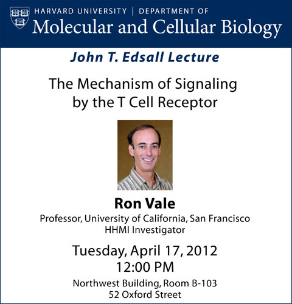

News Archives : 2012 : Ron Vale to Deliver 2012 John T. Edsall Lecture
by Andres Leschziner
April 9, 2012

Ron Vale, Howard Hughes Medical Institute Investigator and Professor of Cellular and Molecular Pharmacology at the University of California, San Francisco, will give the 2012 John T. Edsall Lecture on Tuesday, April 17th, on “The Mechanism of Signaling by the T cell Receptor”.
Ron grew up in Los Angeles, and majored in biology and chemistry at the University of California, Santa Barbara, where he worked in the laboratory of Beatrice Sweeney. Ron then joined the MD/PhD program at Stanford, choosing to do the research portion of his degree on neuroscience in the lab of Eric Shooter. The close proximity to the group of Jim Spudich, where major breakthroughs were being made on the role of myosin in muscle contraction, gave Ron the idea that molecular motors could also be responsible for transport over the enormous distances found in neurons. To follow up on this idea Ron moved to the Marine Biological Laboratories in Woods Hole, where he could more easily obtain the giant squid axons required for the experiments. It was at the MBL that, over two summers and a winter, Ron discovered kinesin, the major motor protein responsible for plus-end-directed transport along microtubules.
Having forgone the MD portion of his degree, Ron received his PhD in 1985 and joined the faculty at UCSF in 1986. He became a full professor in 1994 and an HHMI investigator in 1999. A major focus of the Vale lab has been the characterization of microtubule-based motors, both kinesins and the minus-end-directed dynein, from their cell biological roles to their single-molecule biophysical properties and high-resolution structures. Ron has also worked on factors that regulate the microtubule cytoskeleton, including microtubule nucleators, stabilizers and severing factors. The Vale lab has consistently applied state-of-the-art microscopy techniques to a variety of cell biological questions.
Ron’s interest in scientific outreach has lead to his involvement in a number of educational activities, including founding the iBioSeminars, co-directing the Physiology course at the MBL, and founding and co-organizing both the Bangalore Microscopy Course and the Young Investigator Meeting in India. Ron is also the current president of the American Society of Cell Biology.
Ron is a member of the American Academy of Arts and Sciences and the National Academy of Sciences. Among other honors he received the Pfizer Award in Enzyme Chemistry, the Young Investigator Award from the Biophysical Society, a MERIT Award from NIH and, most recently, shared the Wiley Prize with Jim Spudich and Mike Sheetz.
 The Edsall Lecture is given annually in honor of John Edsall, a member of the faculty of Harvard University from 1928 to 1973, when he became emeritus but remained engaged in research for more than 20 years. He died in 2002 a few months short of 100 years of age. Dr. Edsall's scientific career started in Edwin J. Cohn’s Department of Physical Chemistry at Harvard Medical School, where he studied the properties of the muscle proteins and of the amino acids. These studies among many others led to the 1943 book by Cohn and Edsall, Proteins, Amino Acids and Peptides as Ions and Dipolar Ions, which became a classic in the field of protein chemistry. During World War II he had a key role in isolating blood proteins for the war effort and developed fibrin foam, a porous form of a fibrin clot for use in neurosurgical procedures. In 1954, Dr. Edsall joined the Faculty of Arts and Sciences and moved to the Biological Laboratories, where he started research on carbonic anhydrase. He was greatly concerned with education. He was a tutor in the biochemical sciences concentration for 40 years and Head Tutor from more than 25 years. He taught a course on biophysical chemistry at the college from 1940 until he retired; the course led to the writing of a textbook with his closest scientific colleague, Jeffries Wyman. He had a leading role in 1954 in the formation of the Committee on Higher Degrees in Biochemistry, a graduate program leading to the PhD degree in biochemistry; the committee became the Department of Biochemistry and Molecular Biology in 1967. Dr. Edsall was also a champion in the fight for the freedom and integrity of science. – Guido Guidotti The Edsall Lecture is given annually in honor of John Edsall, a member of the faculty of Harvard University from 1928 to 1973, when he became emeritus but remained engaged in research for more than 20 years. He died in 2002 a few months short of 100 years of age. Dr. Edsall's scientific career started in Edwin J. Cohn’s Department of Physical Chemistry at Harvard Medical School, where he studied the properties of the muscle proteins and of the amino acids. These studies among many others led to the 1943 book by Cohn and Edsall, Proteins, Amino Acids and Peptides as Ions and Dipolar Ions, which became a classic in the field of protein chemistry. During World War II he had a key role in isolating blood proteins for the war effort and developed fibrin foam, a porous form of a fibrin clot for use in neurosurgical procedures. In 1954, Dr. Edsall joined the Faculty of Arts and Sciences and moved to the Biological Laboratories, where he started research on carbonic anhydrase. He was greatly concerned with education. He was a tutor in the biochemical sciences concentration for 40 years and Head Tutor from more than 25 years. He taught a course on biophysical chemistry at the college from 1940 until he retired; the course led to the writing of a textbook with his closest scientific colleague, Jeffries Wyman. He had a leading role in 1954 in the formation of the Committee on Higher Degrees in Biochemistry, a graduate program leading to the PhD degree in biochemistry; the committee became the Department of Biochemistry and Molecular Biology in 1967. Dr. Edsall was also a champion in the fight for the freedom and integrity of science. – Guido Guidotti |
[April 9, 2012]